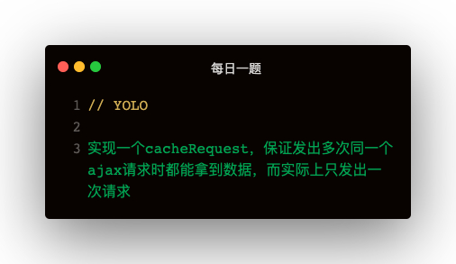

function cacheRequest (): (method: string, url: string, param: string | Document | Blob | ArrayBufferView | ArrayBuffer | FormData | URLSearchParams | ReadableStream<Uint8Array>) => Promise<{}> {
const cache = {}
return (method, url, param) => {
const key = `${method}:${url}:${JSON.stringify(param)}`
if (cache[key]) {
return cache[key];
}
return (
cache[key] = new Promise((resolve, reject) => {
const xhr = new XMLHttpRequest();
xhr.onreadystatechange = () => {
if (xhr.status === 200) {
const { response } = xhr
cache[url] = response
resolve(response)
}
}
xhr.open(method, url, true);
xhr.setRequestHeader('Content-Type', 'applicetion/json');
xhr.send(param);
}).catch(e => {
console.log('error:', e);
})
)
}
}